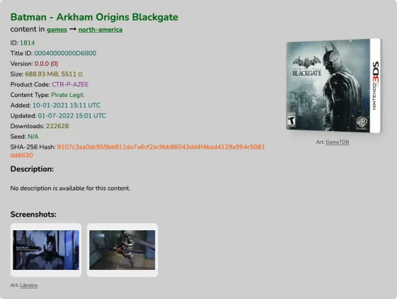
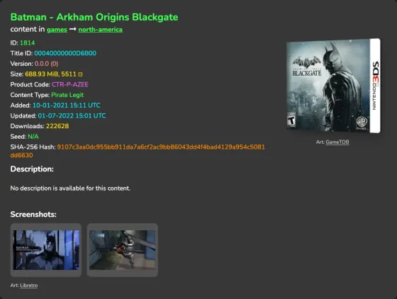
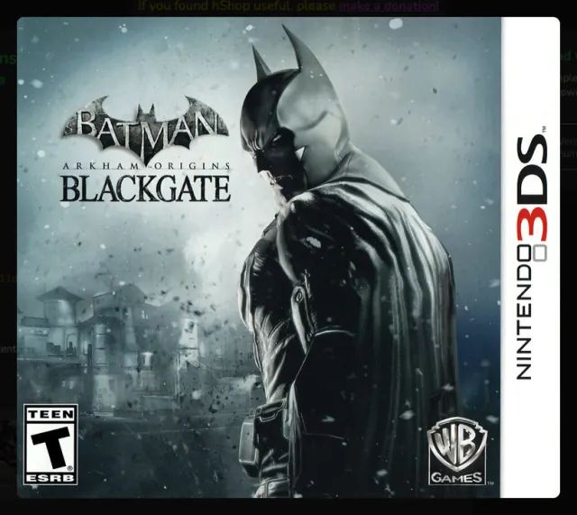
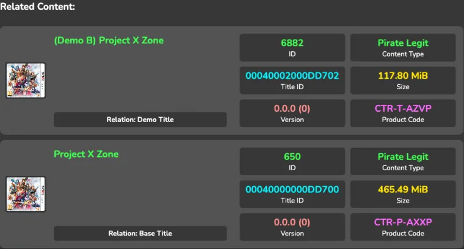
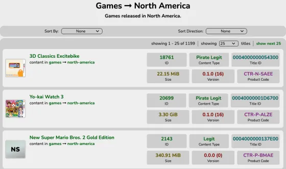
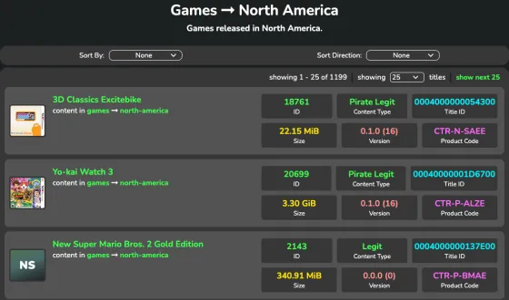
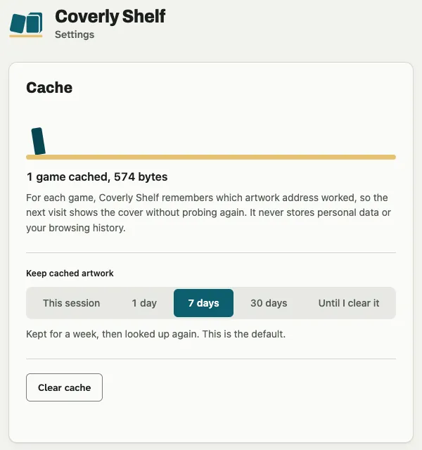
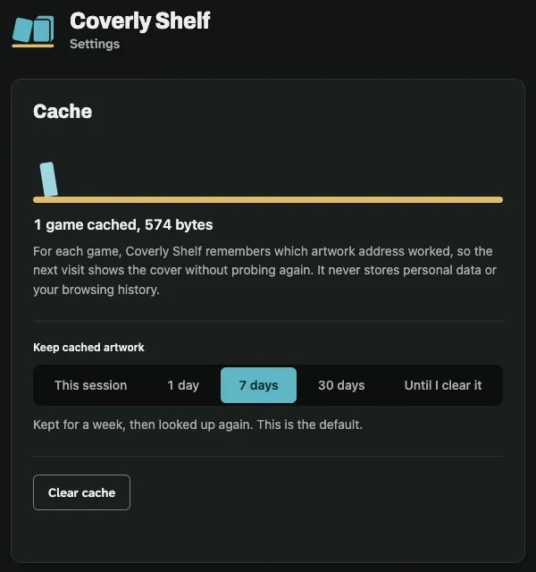

La portada, en su caja
La carátula aparece montada en una caja en 3D, junto al nombre del juego. También funciona con los juegos que solo salieron en digital.
Coverly Shelf es una extensión para el navegador que pone la portada en una caja 3D y una galería de capturas en cada ficha de juego de 3DS en hShop, y una miniatura en cada fila de sus listas. Solo cambia cómo se ve la página: lo demás sigue igual.
Gratis y de código abierto (AGPL-3.0). Para Chrome, Edge y Brave; la versión para Firefox llegará más adelante.
hshop.erista.me/t/1814


Las fichas de hShop traen el nombre, el código del producto y una descripción, pero ninguna imagen. Coverly Shelf usa ese código para buscar la portada y las capturas del juego y las coloca junto al texto.
La carátula aparece montada en una caja en 3D, junto al nombre del juego. También funciona con los juegos que solo salieron en digital.
Una galería con las capturas y la pantalla de título. Se abren en grande y se recorren con el teclado.
←→Esc
Sigue los colores y la tipografía de la página, tanto en modo claro como en oscuro, para que parezca parte de ella.

Pulsa la caja, o llega a ella con el tabulador y pulsa Intro o Espacio, para ver la carátula en grande y con la mejor calidad que haya. Esc la cierra y el foco vuelve a la caja.
IntroEspacioEsc

Cada fila de «Related Content» (las demos, la actualización, los DLC o el juego base) lleva su miniatura. Si una demo o un DLC no tiene imagen propia, usa la del juego que hShop marca como «Base Title»: nunca adivina una portada por el nombre.
Las listas de hShop son filas de texto: nombre, ID y código del producto. Coverly Shelf pone una portada pequeña al principio de cada fila, en la lista principal y en «Top content».
hshop.erista.me/c/games/s/north-america


Juegos, actualizaciones, DLC, Consola Virtual, DSiWare, vídeos y extras: la página principal de cada categoría, cada región y los resultados de búsqueda. Cada fila pide su imagen solo cuando se acerca a la pantalla.
Llevan la portada del juego al que pertenecen.
DSiWare usa las portadas de DS de GameTDB. Si a un juego de Consola Virtual le falta en GameTDB, usa la caja del juego original en Libretro, y solo cuando el título coincide exactamente.
Para no repetir peticiones, Coverly Shelf recuerda qué imagen funcionó para cada juego, y también cuáles no existen. Su botón en la barra del navegador abre los ajustes, en español o en inglés.
Solo esta sesión, 1 día, 7 días (lo predeterminado), 30 días o hasta que lo borres. Lo caducado se elimina una vez al día, así que no crece sin parar.
Los ajustes muestran cuántos juegos hay guardados y cuánto espacio ocupan.
Lo vacía todo de una vez, después de confirmarlo en la misma página. Nunca guarda datos personales ni tu historial.


La extensión no toca nada de lo que hace la página. Esto es lo que puede y lo que no puede hacer.
Solo añade imágenes. No cambia enlaces, botones ni nada de lo que bajas.
Si la página cambia o no hay conexión con las fuentes, quita lo que añadió y la ficha se ve como siempre. Un juego sin portada lleva una carátula lisa, nunca una imagen rota.
Guardar en el propio navegador qué imágenes encontró, para no volver a pedirlas, y leer imágenes de dos sitios. Nada más: el botón de la barra que abre los ajustes no necesita permisos.
No hay analítica, ni registro, ni servidor propio. Lo que visitas no sale de tu navegador.
// manifest.json (extracto)
"permissions": ["storage"],
"host_permissions": [
"https://art.gametdb.com/*",
"https://thumbnails.libretro.com/*"
]Mientras no esté en la Chrome Web Store, se instala a mano desde las versiones de GitHub.
Desde la página de versiones del proyecto en GitHub.
El navegador carga la extensión desde esa carpeta: si la borras o la mueves, deja de funcionar.
Abre chrome://extensions (en Edge, edge://extensions; en Brave, brave://extensions) y activa el interruptor Modo de desarrollador.
Pulsa Cargar descomprimida y elige la carpeta, o arrástrala directamente a la página de extensiones.
Las portadas, las capturas y las miniaturas aparecen solas, sin nada que configurar.
Todavía no se ha enviado. Hasta entonces se instala a mano desde GitHub, con el mismo código que puedes leer en el repositorio. Cuando esté publicada, lo verás en esta página.
En hShop: las fichas de títulos (hshop.erista.me/t/…), las listas de cada categoría (/c/…) y los resultados de búsqueda. En cualquier otra web no hace nada. Coverly Shelf es un proyecto independiente, sin relación con hShop ni con Nintendo.
No. La extensión solo añade imágenes junto al texto de la ficha. No lee ni modifica enlaces, botones o archivos.
No. Pide las imágenes a art.gametdb.com y thumbnails.libretro.com y recuerda en el almacenamiento del navegador qué encontró para cada juego. Para las filas de «Top content» que no muestran el código del producto, lee además la ficha de ese juego en la propia hShop. No hay analítica ni cuenta.
Busca primero la de la región del juego, después las de las otras regiones en inglés y luego la de Libretro. Si no encuentra ninguna, pone una carátula lisa con las iniciales del juego, nunca una imagen rota.
Siete días por defecto. En sus ajustes (pulsa su botón en la barra del navegador) puedes elegir solo esta sesión, 1 día, 7 días, 30 días o hasta que lo borres, ver cuánto ocupa y vaciarlo con Borrar caché.
Lo menos posible. Comprueba cada imagen con una petición pequeña (HEAD) antes de descargarla, así que descarta las que no existen sin bajarlas; hace como mucho 4 peticiones de imágenes a la vez, y cada fila de una lista pide la suya solo cuando se acerca a la pantalla. Lo que ya encontró no lo vuelve a pedir.
Está prevista. Cuando haya una versión probada, aparecerá en las versiones de GitHub y en esta página.
Sí. No cuesta nada, no pide cuenta y su código es AGPL-3.0.
Las portadas vienen de GameTDB, una base de datos de juegos que mantiene su comunidad. Las imágenes son de sus dueños.
Las capturas y pantallas de título, y las portadas que GameTDB no tiene, vienen de libretro-thumbnails, el archivo de miniaturas del proyecto Libretro.
Coverly ROMs hace lo mismo con las ROMs de tu tarjeta SD: encuentra las portadas que faltan y las añade.